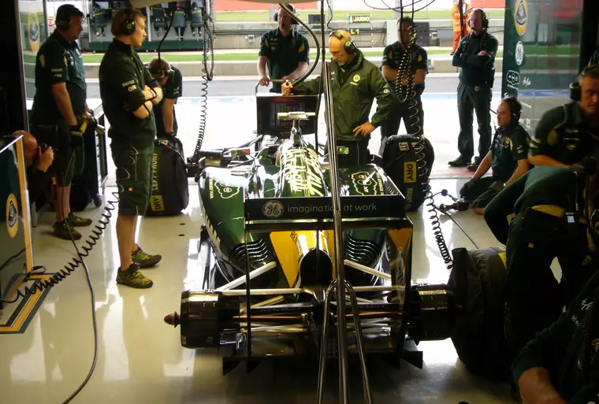
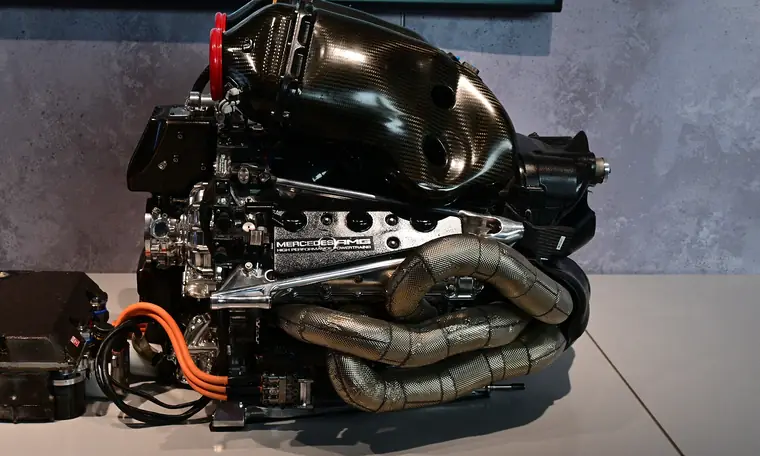
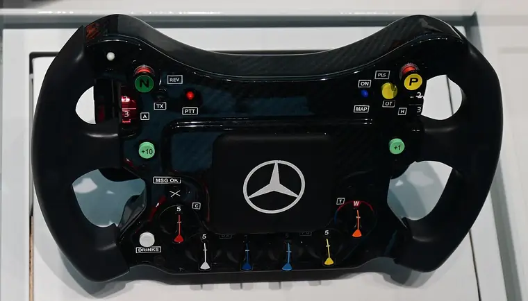
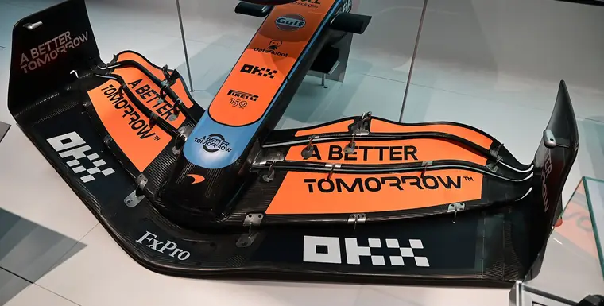
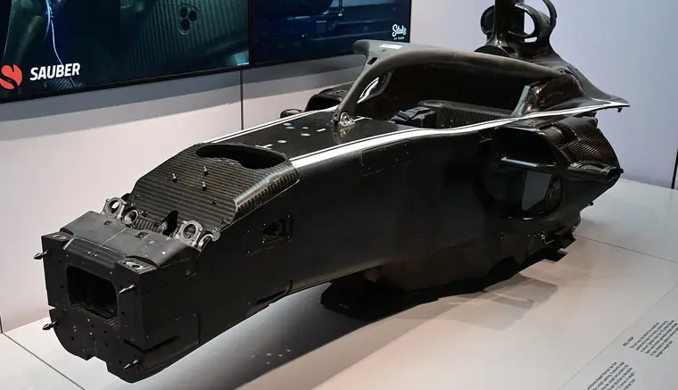
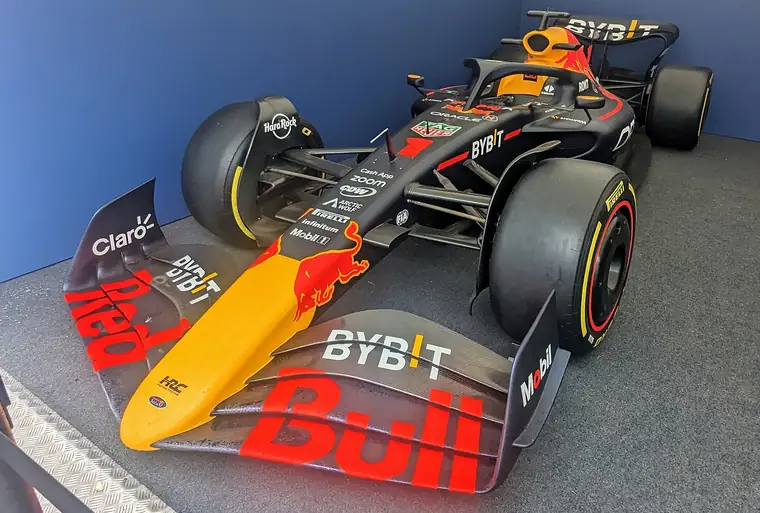
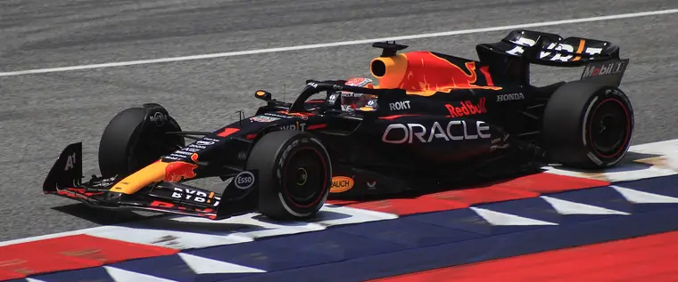

18 июля 2021 года, первый круг Гран-при Великобритании. В скоростном повороте Copse Макс Ферстаппен и Льюис Хэмилтон сталкиваются, и Red Bull Ферстаппена на скорости около 180 миль в час (примерно 290 км/ч) уходит в барьер. Удар потом оценят в 51g. Через несколько дней руководитель команды Кристиан Хорнер называет сумму: ремонт обойдётся примерно в 1,8 миллиона долларов. И добавляет, что в первый сезон бюджетного потолка у такого счёта будут «огромные последствия».
Ремонт после одной аварии потянул почти на два миллиона. Сколько тогда стоит вся машина? Я собирал ответ по открытым документам, и короткая версия у меня такая. Детали одной машины без мотора, по оценке журнала Motor Sport Magazine, стоят около 2 миллионов долларов. Цену одного мотора открыто никто не называет: регламент FIA ограничивает 15 миллионами евро цену поставки моторов на весь сезон, вместе с запчастями и для двух машин команды-клиента. Эту сумму называет сам регламент. Наконец, учитываемые расходы команды за год FIA ограничивает базовым потолком в 215 миллионов долларов на 2026 год, и зарплаты гонщиков и маркетинг в него не входят.
Все расчёты в тексте, включая рубли по курсу ЦБ на 14 октября 2026 года, сделал я сам. У исходных чисел стоят ссылки на источники.
- Комплект шин3 000 $
- Руль50 000 $
- Ремонт после аварии Шумахера, Джидда-20220,5-1 млн $
- Ремонт после аварии Ферстаппена, Сильверстоун-20211,8 млн $
- Детали одной машины без мотора, сумма строк сметы1,83-1,89 млн $
- Ferrari F2003-GA на аукционе, 202214,87 млн $
- Поставка моторов клиенту на сезон, максимум15 млн €
- Базовый потолок учитываемых расходов команды, 2026215 млн $
- Взнос новой команды, Cadillac450 млн $
Евро и доллары не пересчитаны друг в друга: у каждой полосы своя единица, полоса в евро заштрихована. Светлый хвост полосы - вилка оценки. Источники: Motor Sport Magazine (сумма строк - наш расчёт), The Race, Formula1.com, BusinessDay (RM Sotheby's), FIA, Crash.net со ссылкой на BBC Sport.
Почему у болида нет ценника
Болид не покупают в салоне. Команда проектирует и строит его сама, на своём заводе, и продавать свежую машину кому-то со стороны не станет: в ней годы работы над днищем и подвеской, и соперник разобрал бы её на чертежи.

Поэтому вопрос о цене приходится делить на два. Первый - во что обходится изготовить одну машину, если сложить стоимость узлов. Второй - сколько команда тратит за сезон, чтобы машины вообще ездили. Я держу эти вопросы раздельно, потому что самая подробная открытая смета их смешала.
Где ценник всё-таки появляется
На аукционах продают бывшие гоночные машины. 9 ноября 2022 года в Женеве аукционный дом RM Sotheby's продал Ferrari F2003-GA с номером шасси 229. На этой машине Михаэль Шумахер выиграл пять гонок и шестой титул. В 2022 году её полностью перебрало подразделение Ferrari F1 Clienti, и на торги она вышла на ходу.
Итоговая цена с комиссией - 14 630 000 швейцарских франков, или 14 873 327 долларов, и на тот момент это был рекорд для болида современной эпохи. По данным AFP, торговались больше сорока минут, и выиграл покупатель, который делал ставки по телефону и не назвал себя. Прежний рекорд современной эпохи принадлежал другой машине Шумахера, Ferrari F2001: в 2017 году в Нью-Йорке за неё дали 7,5 миллиона долларов.
Машины 1950-х стоят дороже. Команда Mercedes пишет, что W196 Хуана Мануэля Фанхио ушёл в 2013 году за 23,65 миллиона евро, а в феврале 2025 года W196 R Streamliner продали на торгах RM Sotheby's в Штутгарте за 51,155 миллиона евро. В аукционной цене есть история машины и имя гонщика, поэтому для расчёта стоимости изготовления она не годится.
Смета журнала: узлы одной машины
Самую подробную открытую смету по узлам составил журнал Motor Sport Magazine. Материал Джеймса Элсона вышел 14 января 2025 года и обновлён 17 января, поэтому в нём машина прежнего регламента, с системой DRS на заднем крыле и мотором старой схемы. Журнал оценивает только производство, расходы на исследования и разработку в смету не входят.
| Узел | Оценка, $ | Оценка, £ |
|---|---|---|
| Силовая установка (по регламенту FIA это цена поставки на сезон, см. ниже) | 18 320 000 | 12 920 000 |
| Монокок (шасси) | 707 000 | 500 000 |
| Коробка передач | 354 000 | 250 000 |
| Гидравлика | 170 000 | 123 000 |
| Переднее крыло с носовым обтекателем | 141 500 | 100 000 |
| Днище и боковые дефлекторы | 141 000 | 100 000 |
| Заднее крыло с системой DRS | 85 000 - 150 000 | 61 000 - 108 000 |
| Тормозные диски и колодки | 78 000 | 55 000 |
| Прочие расходы | 51 000 | 36 000 |
| Руль | 50 000 | 35 000 |
| Топливный бак | 31 000 | 22 000 |
| Дуга безопасности Halo | 17 000 | 12 000 |
| Шины, за комплект | 3 000 | 2 080 |
| Итог журнала | 20 620 000 | 14 580 000 |
Итог журнала - 20,62 миллиона долларов. Когда я сложил строки таблицы, получилось от 20,15 до 20,21 миллиона, в зависимости от цены заднего крыла. Разница больше 400 тысяч долларов, и в тексте журнала она не объяснена. В этой таблице дешевле Halo только комплект шин, хотя сам журнал упоминает и мелочи вроде подшипника колеса примерно за 1100 фунтов.
Главная строка сметы оказалась сезонной поставкой
Почти всю сумму журнала даёт одна строка: 18,32 миллиона долларов за силовую установку. Журнал объясняет её словами Пэта Саймондса, бывшего технического директора Формулы-1: по регламенту клиентскую команду должны снабжать моторами за 12 миллионов евро, а на деле клиенты платят «в районе 15 миллионов евро за один мотор». Отсюда в смете 12,92 миллиона фунтов.
Я открыл сам технический регламент FIA 2025 года. В приложении 4, пункт 3, сказано, что «периметр поставки» силовых установок продаётся по максимальной цене пятнадцать миллионов евро. Что входит в этот периметр, расписано в приложении 3, строка A: моторы и запчасти на все соревнования чемпионата плюс 5000 километров тестов. Минимальное число моторов - норма на одного пилота за сезон, умноженная на два, плюс моторы для тестов. В ту же поставку входят пять человек поддержки на тестах и гонках.
По регламенту 15 миллионов евро - это потолок цены за сезонный комплект моторов для двух машин команды-клиента, а журнал поставил эту сумму в смету одной машины. Цену одного мотора регламент не даёт, и делить сезонную сумму на число моторов нельзя: в неё входят запчасти и работа людей. Открытого первоисточника с ценой одного мотора я не нашёл.
Цену одного мотора регламент не даёт; сезонную сумму на число моторов не делить.
Если убрать строку мотора, детали одной машины по строкам таблицы стоят от 1,83 до 1,89 миллиона долларов, а по итогу журнала без этой строки - 2,3 миллиона.
- Монокок707 000 $
- Коробка передач354 000 $
- Гидравлика170 000 $
- Переднее крыло с носом141 500 $
- Днище и дефлекторы141 000 $
- Заднее крыло с DRS85 000-150 000 $
- Тормозные диски и колодки78 000 $
- Прочие расходы51 000 $
- Руль50 000 $
- Топливный бак31 000 $
- Halo17 000 $
- Шины, комплект3 000 $
Сумма строк1 828 500-1 893 500 $
Без строки мотора. Итог журнала без неё - 2,3 млн $; сумма строк меньше итога журнала, разницу журнал не объясняет.
Источник: Motor Sport Magazine, Джеймс Элсон, 14.01.2025, обновлено 17.01.2025. Сумма строк - наш расчёт.

До 2026 года силовая установка состояла из шести элементов: двигателя внутреннего сгорания, турбокомпрессора, двух мотор-генераторов, накопителя энергии и управляющей электроники. Один генератор, MGU-K, возвращал энергию торможения, второй, MGU-H, забирал тепло выхлопа. Разбор Formula1.com от 14 января 2026 года пишет, что в новой установке MGU-H убрали, а MGU-K стал почти втрое мощнее: 350 киловатт вместо 120.
Руль журнал оценил в 50 тысяч долларов. На нём экран и десятки кнопок и переключателей, он снимается, и через него пилот управляет почти всеми системами машины. Монокок, карбоновая капсула, в которой сидит гонщик и к которой крепится всё остальное, стоит около 707 тысяч.

Коробка, тормоза и шины
Коробку с восемью передачами вперёд журнал оценивает в 354 тысячи долларов, тормозные диски и колодки из углерод-углеродного композита - в 78 тысяч. Комплект шин стоит около 3 тысяч. На резине деньги почти ничего не решают: Pirelli поставляет её всем командам по одним правилам, а число комплектов, которые каждый гонщик может использовать за уик-энд, ограничивает FIA.
Сколько стоят новые крылья и днища
Переднее крыло с носовым обтекателем стоит, по оценке журнала, 141,5 тысячи долларов, днище с боковыми дефлекторами - почти столько же. Крыло, с которым команда начинает сезон, к его концу обычно давно снято с машины. Обновления привозят чуть ли не на каждый этап, и каждое начинается с чертежей и часов в аэродинамической трубе.

Карбон выклеивают слоями и запекают в автоклаве. Деталь выходит лёгкой и жёсткой, но сильный удар её ломает, и после аварии такие детали меняют целиком, как кузов Haas в Джидде, о котором ниже.

Что не вошло в оценку журнала
В оценку журнала не включены исследования и разработка: инженеры, симуляторы, аэродинамическая труба и расчёты. Машина у команды к тому же не одна: за год собирают несколько шасси, часть про запас, и всё время выпускают новые крылья и днища взамен старых и разбитых. За сезон команда тратит деньги и на разработку, и на эксплуатацию машин, и эту часть FIA с 2021 года ограничивает отдельно.
Как устроен бюджетный потолок
О нём и говорил Хорнер летом 2021 года. FIA ввела потолок учитываемых расходов, один лимит на все команды. Разбор Formula1.com от 10 апреля 2026 года приводит историю базового лимита: 145 миллионов долларов в 2021 году, 140 в 2022-м, 135 с 2023 по 2025 год. Сами правила FIA публикует открыто, в финансовом регламенте: раздел D касается команд, раздел E - производителей моторов.
Лимит растёт вместе с календарём, и правило для этого в 2026 году поменялось:
| Период | База лимита | Надбавка за длинный календарь | Источник |
|---|---|---|---|
| 2023-2025 | 135 млн $ | +1,8 млн $ за каждую гонку после 21-й | Motor Sport Magazine, 28.10.2025 |
| 2026 | 215 млн $ | +1,8 млн $ за каждую гонку после 24-й | FIA, финансовый регламент, ст. D4.1.2 |
При календаре из 24 этапов старое правило давало командам ещё 5,4 миллиона долларов сверх базы. В регламенте 2026 года 24 гонки уже входят в базовые 215 миллионов, и надбавка начнёт работать только с двадцать пятой.
Базовый лимит вырос до 215 миллионов. Считали его, по словам Formula1.com, от прежних 135 миллионов с поправкой на инфляцию 2025 года и с учётом новых статей, поэтому в разборе прибавку называют «примерно нейтральной». Отдельный лимит на капитальные вложения, 36 миллионов за скользящие четыре года, отменили, амортизацию оборудования перенесли внутрь общего потолка, а затраты на сотрудника, занятого проектами Формулы-1, теперь целиком учитывают в лимите.
- 1452021
- 1402022
- 1352023
- 1352024
- 1352025
- 2152026
2026: прибавка примерно нейтральна - в лимит перенесли амортизацию и убрали отдельный лимит капвложений (Formula1.com).
Источники: Formula1.com, 10.04.2026; FIA, финансовый регламент 2026, ст. D4.1.2.
Что в потолок не входит
За лимитом остаются самые крупные контракты: зарплаты гонщиков и трёх самых высокооплачиваемых сотрудников команды, обычно среди них руководитель и технический директор. Не входят в потолок и расходы на юристов, бухгалтерию, отдел кадров, маркетинг, программы устойчивого развития, исторические машины и перелёты на гонки. Позже к исключениям добавили охрану труда и питание сотрудников на заводе и на гонках. Весь перечень взят из того же разбора Formula1.com.
Сколько стоит ошибка
Весна 2022 года, квалификация в Джидде. Мик Шумахер разбивает Haas о стену с перегрузкой 33g, и сессию останавливают красным флагом на 57 минут. Сам гонщик не пострадал. Руководитель команды Гюнтер Штайнер потом подсчитывает убыток: от полумиллиона до миллиона долларов. Он перечислял потери почти как опись: коробка передач, весь кузов, все радиаторы, от подвески уцелела только передняя левая часть, «остальное - карбоновая пыль». Само шасси и мотор Ferrari, по его словам, выглядели целыми. И всё равно к гонке машину восстанавливать не стали, чтобы не рисковать следующими этапами.
Резерв на аварии в бюджете есть, объяснял Штайнер, но если таких ударов будет два или три, от него быстро ничего не останется. Тот год был вторым под потолком, и лимит составлял 140 миллионов долларов. При потолке расходов деньги на новый кузов команда берёт из того же лимита, что и на развитие машины.
Превышение самого потолка наказывают отдельно. По разбору Motor Sport Magazine, в 2021 году Red Bull вышла за лимит на 1,864 миллиона фунтов, или на 1,6 процента. FIA сочла нарушение незначительным, меньше 5 процентов, но назначила штраф 7 миллионов долларов и на год урезала команде лимит аэродинамических испытаний на 10 процентов. Под это сокращение попала разработка машин 2023 и 2024 годов.

Что показывают отчёты команд
Британские команды Формулы-1 сдают годовую отчётность в государственный реестр Companies House. В этих отчётах отражаются и расходы, исключённые из потолка.
По данным RacingNews365, оборот Red Bull Racing Ltd за 2025 год составил 379,583 миллиона фунтов против 314,409 миллиона годом ранее, прибыль после налогов - 9,384 миллиона. Отчёт утверждён 6 февраля 2026 года, пишет GPblog. Оборот показывает выручку компании, и по нему одному нельзя сказать, сколько стоит сезон. GPblog предупреждает, что сравнивать 2025 год с 2024-м надо осторожно: команда сменила правила учёта, а прошлогодние цифры не пересчитаны.
Отдельной строкой в том же отчёте стоит компенсация за потерю должности: 33,494 миллиона фунтов, и вся сумма пришлась на самого высокооплачиваемого директора. Имени отчёт не называет. GPblog связывает выплату с уходом Кристиана Хорнера, того самого, кто в 2021 году считал ущерб от Сильверстоуна. По данным IBTimes, Хорнера сняли с постов руководителя команды и исполнительного директора 9 июля 2025 года. Прямой записи о нём в отчётности нет.
У материнской компании Red Bull Technology та же графа ещё крупнее, 66,988 миллиона фунтов. IBTimes сразу предупреждает, что складывать две суммы нельзя: материнская компания включает отчётность дочерней, и одну выплату легко посчитать дважды.

Финансовые документы команды сдают и в FIA. По итогам 2024 года FIA подтвердила, что все десять команд уложились в лимит. Aston Martin получила лишь процедурное замечание за опоздавшую подпись аудитора, без штрафа.
Цена входа: право выставить свой болид
При входе новой команды в чемпионат предусмотрен отдельный взнос. Его получают действующие команды: после прихода новичка призовые Формулы-1 делятся на одиннадцать частей вместо десяти, и взнос компенсирует им эту потерю.
По правилам, действовавшим до 2026 года, взнос составлял 200 миллионов долларов. Для General Motors, чья команда Cadillac дебютировала в 2026 году, его подняли. Crash.net 26 ноября 2024 года со ссылкой на BBC Sport сообщил о сумме 450 миллионов долларов, или 358 миллионов фунтов. Цифру назвали источники BBC внутри Формулы-1, официально её не публиковали.
Тото Вольфф, руководитель Mercedes, в январе 2025 года сказал, что и этого мало: 450 миллионов, по его словам, не покрывают прямых потерь в доходах. Двумя месяцами раньше похожее говорил Хельмут Марко из Red Bull. В интервью австрийской газете Österreich, которое пересказал grandprix.com 27 ноября 2024 года, он назвал платёж Cadillac далеко недостаточным: Red Bull вкладывала деньги в команду десять лет.
Что меняется в 2026 году
Cadillac дебютировала в год, когда машину переписали почти целиком. По вводному разбору Formula1.com, около половины мощности теперь электрическая, топливо делают из устойчивых источников, а вместо DRS работает режим обгона с добавкой энергии +0,5 мегаджоуля. Минимальную массу снизили с 800 до 768 килограммов, днище сузили на 100 миллиметров. Прошлогодние детали под эти размеры не подходят.
Лимит расходов самих производителей моторов тоже изменился. Он ограничивает их собственные затраты на разработку и производство, а цену поставки клиентам задаёт другое правило. С 2023 по 2025 год заводам разрешали тратить 95 миллионов долларов в год плюс инфляцию. На 2026 год сначала планировали 130 миллионов, а установили 190, пишет Formula1.com. Новичкам, которые только строят первый мотор, за три года до дебюта лимит подняли с 95 до 148,5 миллиона.
Пересчёт в рубли по курсу ЦБ
Официальный курс ЦБ РФ на 14 октября 2026 года: доллар - 83,8675 рубля, евро - 93,7723 рубля, фунт - 110,8728 рубля. Для другой даты суммы нужно пересчитать по её курсу.
| Что | В валюте | В рублях |
|---|---|---|
| Детали одной машины без мотора, по строкам сметы | 1,83-1,89 млн $ | около 153-159 млн |
| Итог сметы журнала со строкой мотора | 20,62 млн $ | около 1,73 млрд |
| Предельная цена сезонной поставки моторов, регламент 2025 | 15 млн € | около 1,41 млрд |
| Ремонт после Сильверстоуна-2021 | 1,8 млн $ | около 151 млн |
| Ferrari F2003-GA на аукционе | 14,87 млн $ | около 1,25 млрд |
| Базовый потолок расходов с 2026 года | 215 млн $ | около 18 млрд |
| Взнос Cadillac за вход в чемпионат | 450 млн $ | около 37,7 млрд |
| Оборот Red Bull Racing за 2025 год | 379,583 млн £ | около 42,1 млрд |
Итог
Смета в 20,62 миллиона долларов держится на строке мотора, которая по регламенту FIA описывает поставку моторов на весь сезон. Детали одной машины без мотора по той же смете стоят около 2 миллионов долларов, цену одного мотора открытые документы не дают. Сезонная поставка моторов команде-клиенту по регламенту 2025 года стоит не дороже 15 миллионов евро. Учитываемые расходы команды в 2026 году ограничены базовым потолком в 215 миллионов долларов.
Источники
- Formula1.com - «Red Bull estimate damage to Verstappen's car from Hamilton collision will cost them $1.8 million» - https://www.formula1.com/en/latest/article/red-bull-estimate-damage-to-verstappens-car-from-hamilton-collision-will.4KgQmjryYnBWvTbLQu5IYc - 24.07.2021, доступ 14.10.2026.
- Tires & Parts - «Ex-Michael Schumacher Ferrari F2003-GA sells for record CHF 14,630,000 at Sotheby's Luxury Week sale in Geneva» - https://tiresandparts.net/news/ex-michael-schumacher-ferrari-f2003-ga-sells-for-record-14630000-chf-14873327-usd-at-sothebys-luxury-week-sale-in-geneva/ - 10.11.2022, доступ 14.10.2026.
- BusinessDay - «Schumacher Ferrari sells for more than $14m at Swiss auction» - https://www.businessday.co.za/bd/life/motoring/2022-11-16-schumacher-ferrari-sells-for-more-than-14m-at-swiss-auction/ - 16.11.2022, доступ 14.10.2026.
- Gulf News (AFP) - «Schumacher Ferrari fetches record $13 million at auction» - https://gulfnews.com/sport/schumacher-ferrari-fetches-record-13-million-at-auction-1.1668011144508 - 09.11.2022, доступ 14.10.2026.
- Mercedes-AMG Petronas F1 Team - «Introducing the most valuable Grand Prix car ever» - https://www.mercedesamgf1.com/news/introducing-the-most-valuable-grand-prix-car-ever - 03.02.2025, доступ 14.10.2026.
- Motor Sport Magazine, Джеймс Элсон - «How much does an F1 car cost?» - https://www.motorsportmagazine.com/articles/single-seaters/f1/how-much-does-an-f1-car-cost/ - 14.01.2025, обновлено 17.01.2025, доступ 14.10.2026.
- FIA - «2025 Formula 1 Technical Regulations», выпуск 3, приложения 3 и 4 (с. 165 и 168) - https://www.fia.com/sites/default/files/documents/fia_2025_formula_1_technical_regulations_-_issue_03_-_2025-04-07.pdf - 07.04.2025, доступ 14.10.2026.
- Formula1.com - «2026 regulations explained: All you need to know about F1's new power units» - https://www.formula1.com/en/latest/article/2026-regulations-explained-all-you-need-to-know-about-f1s-new-power-units.14jfv7a36905uDJDdNyfQd - 14.01.2026, доступ 14.10.2026.
- Formula1.com - «EXPLAINED: What is the F1 cost cap and why has it gone up?» - https://www.formula1.com/en/latest/article/explained-what-is-the-f1-cost-cap-and-why-has-it-gone-up.2tYtDIe5SbE5utjThctBT3 - 10.04.2026, доступ 14.10.2026.
- FIA - раздел регламентов Формулы-1 (финансовый регламент) - https://www.fia.com/regulation/category/110 - доступ 14.10.2026.
- Motor Sport Magazine - «What is Formula 1's cost cap? What it covers, penalties and more» - https://www.motorsportmagazine.com/articles/single-seaters/f1/what-is-the-f1-cost-cap/ - 28.10.2025, доступ 14.10.2026.
- FIA - «2026 F1 Regulations, Section D: Financial - F1 Teams», выпуск 08, статья D4.1.2 - https://www.fia.com/system/files/documents/fia_2026_f1_regulations_-_section_d_financial_-_f1_teams_-_iss_08_-_2026-10-01.pdf - 01.10.2026, доступ 14.10.2026.
- The Race - «What six-digit Schumacher crash bill means for Haas F1 budget» - https://www.the-race.com/formula-1/what-six-digit-schumacher-crash-bill-means-for-haas-f1-budget/ - 29.03.2022, доступ 14.10.2026.
- RacingNews365 - «Red Bull boast major financial profits after turbulent F1 year» - https://racingnews365.com/red-bull-boast-major-financial-profits-after-turbulent-f1-year - 07.10.2026, доступ 14.10.2026.
- GPblog - «Red Bull reveal financial cost of turbulent year as profits rise» - https://www.gpblog.com/en/analysis/red-bull-reveal-financial-cost-of-turbulent-year-as-profits-rise - 07.10.2026, доступ 14.10.2026.
- IBTimes UK - «Sacked but £100M Richer? What Red Bull Accounts Reveal About Christian Horner's Exit» - https://www.ibtimes.co.uk/red-bull-accounts-christian-horner-compensation-1824429 - 09.10.2026, доступ 14.10.2026.
- Autosport - «FIA confirms all F1 teams met 2024 cost cap, Aston Martin in procedural breach» - https://www.autosport.com/f1/news/fia-confirms-all-f1-teams-met-2024-cost-cap-aston-martin-in-procedural-breach/10772182/ - 28.10.2025, доступ 14.10.2026.
- Crash.net - «The huge anti-dilution fee GM has agreed to pay for F1 entry» - https://crash.net/f1/news/1060759/1/huge-anti-dilution-fee-gm-has-agreed-pay-f1-entry - 26.11.2024, доступ 14.10.2026.
- PlanetF1 - «Cadillac F1's $450m payment declared 'too low' by Toto Wolff» - https://www.planetf1.com/news/toto-wolff-cadillac-f1-team-anti-dilution-payment-too-low-f1-2026 - 18.01.2025, доступ 14.10.2026.
- grandprix.com - «Cadillac new team fee is not high enough, says Marko» - https://www.grandprix.com/news/cadillac-new-team-fee-is-not-high-enough-says-marko.html - 27.11.2024, доступ 14.10.2026.
- Formula1.com - «The beginner's guide to the 2026 regulations» - https://www.formula1.com/en/latest/article/the-beginners-guide-to-the-2026-regulations.6j0tS0hrHG2T01tpmK6XYz - доступ 14.10.2026.
- Центральный банк РФ - официальные курсы валют на 14.10.2026 - https://www.cbr.ru/scripts/XML_daily.asp?date_req=14/10/2026 - доступ 14.10.2026.